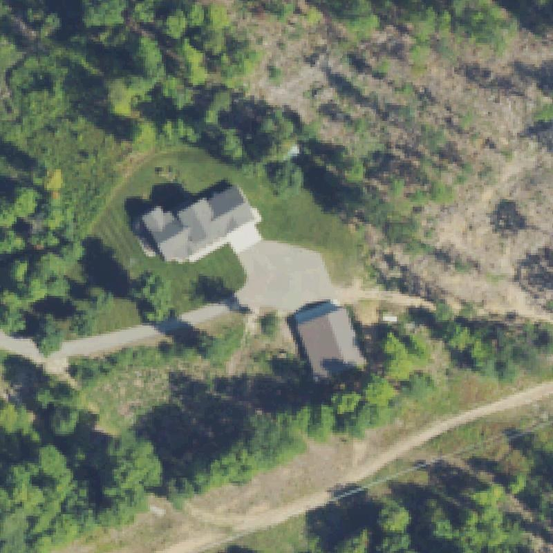
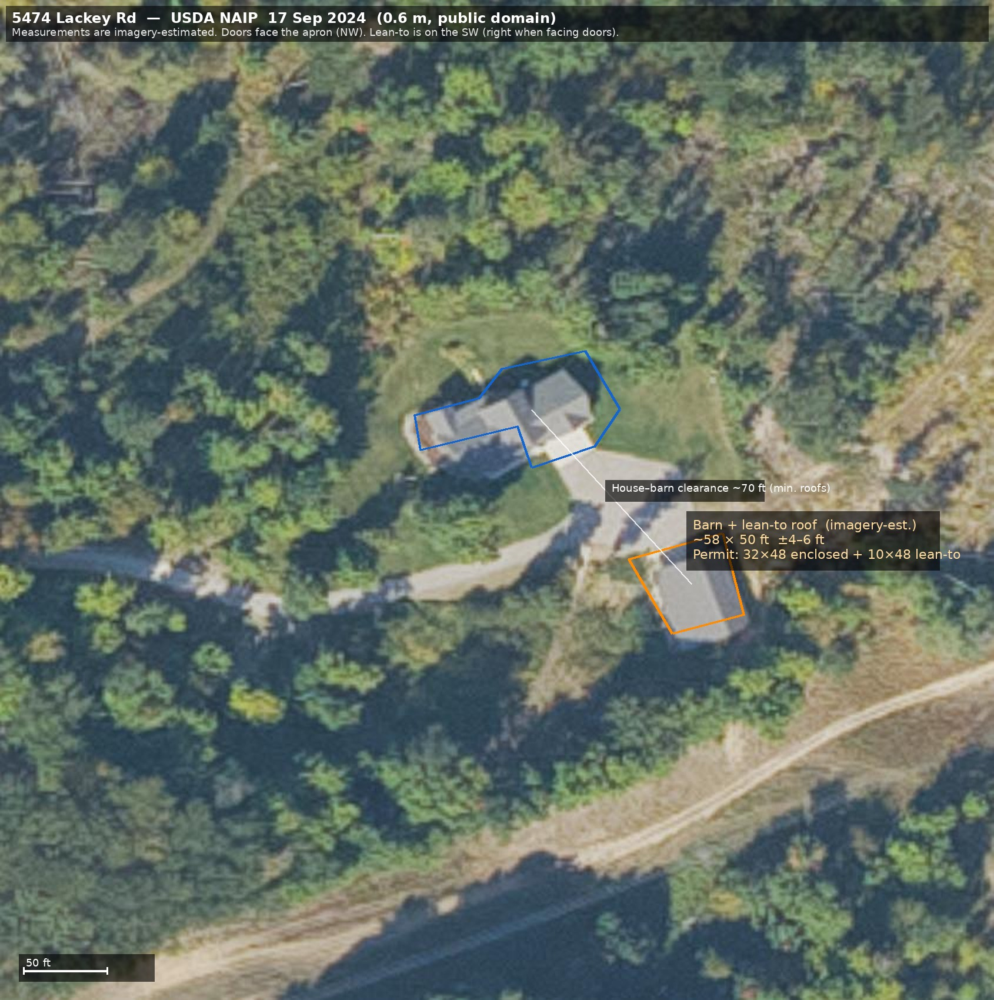
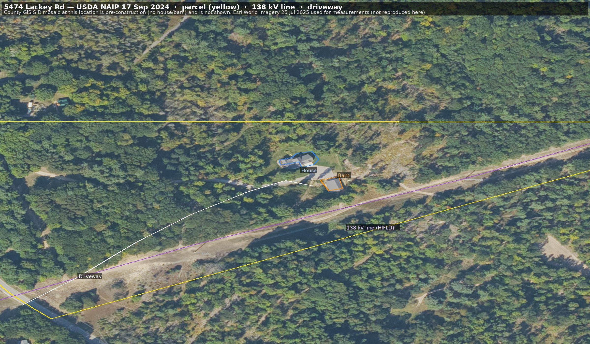
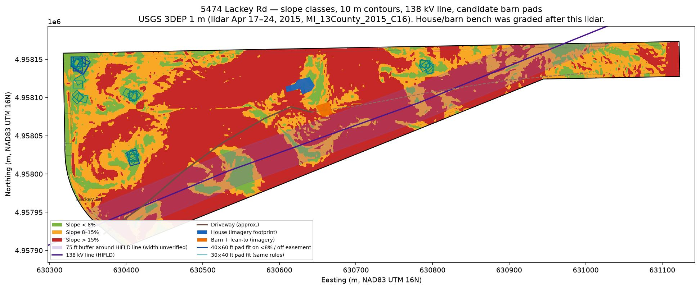
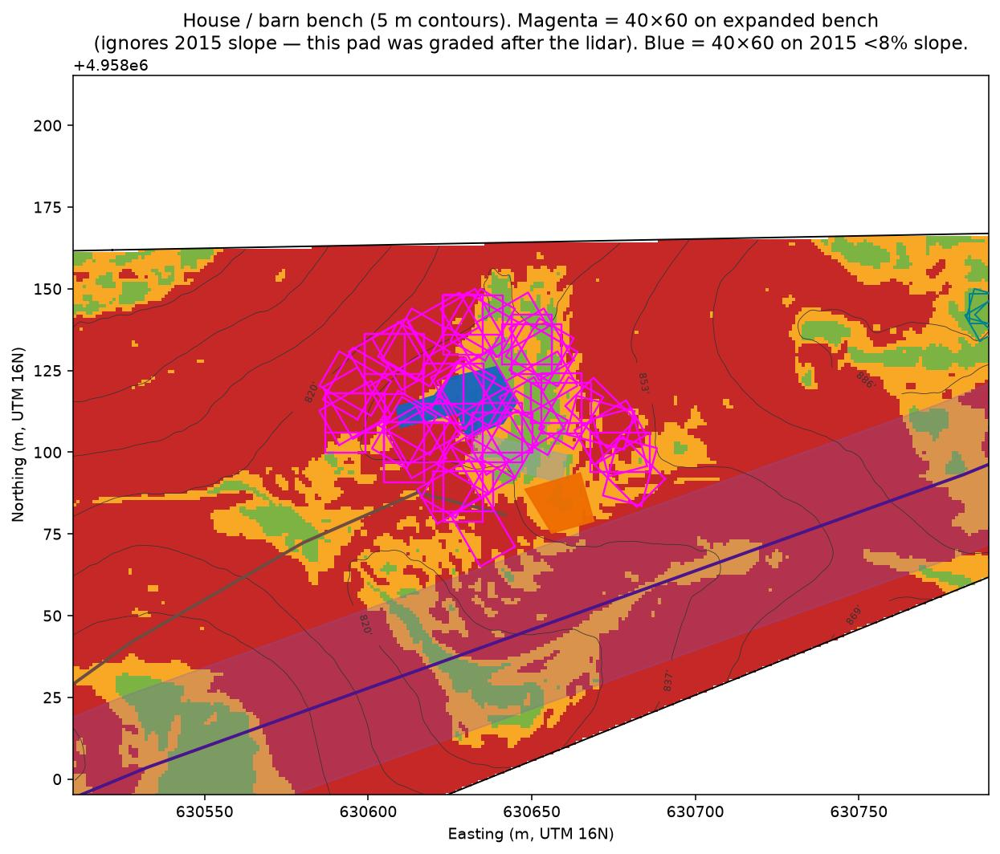

Analysis as of Thursday, Nov 12, 2026. This is a judgment-based market analysis, not an appraisal. The $1,224,000 ask is not supported by nearby sales. Reconciled value is about $9**,000 (range $8**,000–$9**,000). A credible opening offer is $9**,000 cash with a January close; the walk-away is $1.** million.
Questions for Friday’s tour
These are the items still to verify before writing an offer. The barn, the power-line easement, and the well and septic records can change the price. A new barn / topography / gym-fit section is below — tape the measurements on the tour; do not rely on photos or aerials for a go/no-go.
- Barn and basement measurements (tape these). Barn interior clear height (slab to the bottom of the trusses, and under lights or the door opener), at the eave and at the center. Each overhead door: clear width and clear height under the header and the opener rail. Count the doors and look for a third on a side or rear wall. Enclosed barn interior length and width; lean-to depth, length, and eave height. Walkout ceiling height to the joists and under ducts; check the slab and the egress door. Confirm at least 30 feet of clear depth for the Airstream Interstate 24X (24 ft 6 in long, 9 ft 9 in to 10 ft 0 in tall with A/C). The June remarks said “three 12-ft overhead doors”; only two are visible on the front in listing photos. The lean-to eave may be too low for the van.
- Power-line easement. A 138 kV transmission line runs along about 2,100 feet of the south boundary, roughly 204 feet from the house and 81 feet from the barn (from HIFLD map geometry, not a survey; earlier figures of about 240 / 100 ft were from a previous run of the same line). Ask for the recorded easement: owner, width, and clearing or herbicide rights. Look at the corridor in person for buzz, access tracks, and how it sits relative to the house and barn.
- Well and septic records. The house was built in 2019 with a private well and septic, but the permits have not been pulled. Ask Don for well depth and yield, septic size and location, and any inspection reports. If he does not have them, request them from the Grand Traverse County Health Department.
- Listing expiration date. Confirm the listing-agreement end date. If it is a standard six-month term from the June 29 list date, it would end around December 29. That timing is useful leverage if the sellers have not moved by then.
- 15+ acre sales pull. Ask Toni for an NGLRMLS sold set: rural properties of 15 or more acres, 2,000–3,500 square feet, 2010 or newer builds, since January 2025. The public-record comps below should be cross-checked against a complete MLS pull.
- Generator and barn permits. Get the standby generator make, size, and fuel, plus building and electrical permits for the pole barn. The 10/23/2017 county permit for a 1,536 sf pole building with a 480 sf lean-to is marked Terminated 4/22/2020, even though the barn is standing. Ask Don for a final or later permit. Confirm whether further land divisions are still allowed after the 2017 split.
Listing confirmed
This is the only Lackey Road listing near $1.2 million. The other one, 5111 Lackey Rd, was a $339,000 listing that went off market in August.
Parcel 13-001-013-01, Whitewater Township, Grand Traverse County. Owners: Rickie and Christy Davidson. They bought the land in 2016 for $85,000 and built in 2019, so they have large equity and are not under pressure to sell. Listing: realtor.com. Also MLS 80070408 (MiRealSource) and 78080070408 (Realcomp).
Value and offer numbers
Swipe to see the full table.
| Approach | Indication | Weight |
|---|---|---|
| Sales comparison (grid, after a −$25K power-line effect) | $877K | 60% |
| Cost approach (land, house, barn, site, less 7 years of depreciation) | $1.**M | 10% |
| County true cash value (2026 SEV × 2) | $888K | 10% |
| AVMs, discounted for anchoring and the square-footage error | $1.**M | 10% |
| Market exposure: 136 days at $1.22M–$1.35M with no sale | under $1.**M | 10% |
A January 2027 close keeps 2027 taxes on the sellers’ capped value and saves about $7,200, so a January price is worth about $7,000 less than the same price in December. Fair value for a January close is about $9**,000.
Sold comps, adjusted to Lackey
Adjustment rates used: $150/sf above grade, $60/sf finished lower level, $7,000/acre beyond 10 acres, +$75,000 for the 12-ft-door pole building versus none, and +$10,000 for the generator. The subject’s walkout is unfinished. Time adjustment is zero for 2025–26 sales.
Swipe to see the full table.
| Comp | Price / date | Facts | Key adjustments | Adjusted | Weight |
|---|---|---|---|---|---|
| 13496 S Solon Rd, Traverse City (Leelanau) | $1,065,000 · Jun 12, 2026 · 39 DOM | 2021; 2,100 + 1,000 finished lower level; 40 wooded ac; attached 2-car; ORV trails; about 15 min to TC | −$60K lower level, −$95K land, +$50K barn, −$30K location | $935K | 30% |
| 3504 Bowerman Rd, Kingsley | Contingent at $725,000 list | 2018; 2,240 + 1,150 finished lower level; 25 ac; radiant; private gravel road; no barn | −$69K lower level, +$75K barn, +$60K location/schools | $790K | 20% |
| 7327 Crisp Rd, Williamsburg | $939,000 · May 30, 2025 | 2016; 3,300 sf; 10 ac; RV hookups | −$120K size, +$115K land, +$45K barn, −$25K location | $964K | 15% |
| 7021 Cook Rd, Williamsburg | $700,000 · Nov 21, 2025 | 1982; 1,939 sf; 19.5 wooded ac; 4-car plus a second garage | +$90K age, +$49K land, +$25K barn | $898K | 15% |
| 7111 Tobeco Creek Dr, Williamsburg | $1,045,000 · Jul 11, 2025 (13% off list) | 2003; 4,329 sf; 10.5 ac; Elk Rapids schools; no barn | −$223K size, +$112K land, +$75K barn, +$40K age | $1,049K | 10% |
| 8496 SW Hudson Rd, Fife Lake | $760,000 · May 22, 2025 | 2018; 3,500 sf; 39.3 ac; radiant; attached 3-car; about 40 min to TC | −$100K size, −$90K land, +$150K location | $795K | 10% |
The weighted grid comes to $902,000, or $877,000 after the power-line effect. No wooded-acreage home this size near here has sold above about $1.07 million. The 2018–2021 builds on 25–40 acres sold or went under contract at $725,000–$1,065,000.
Other sold data points not in the grid: 802 Potter Rd, East Bay, $1.05M (Oct 2025; 2018, 2,950 sf, 6.1 ac, near TC). 8745 Wheeler Oaks Dr, $1.06M (Aug 2026; 3,776 sf, 5.2 ac). 6061 Hodge Rd, Kingsley, $630K (Nov 2025; 27 ac, 1999). 7902 Elk Lake Rd, $812,500 (Aug 2024; 14.75 ac, Elk Lake views). 6105 Brackett Rd, $1.4M, is a horse property by Flintfields and is not a peer.
Unsold competition
Swipe to see the full table.
| Listing | Ask / status | Facts | Read |
|---|---|---|---|
| 8157 NW Kellogg Rd, Alden | $1,297,900 · active since Jun 26 | 2012 log home, 3,056 sf, 15 ac, heated 30×72 pole barn, pond | Same profile as Lackey and also unsold; a prior listing at $895,900 was withdrawn |
| 8979 Angell Rd, Williamsburg | $1,424,999 · 71 DOM | 5,022 sf, 28.4 ac, 1992 | More than twice the house |
| 8787 Wheeler Pines Dr | $1,095,000 · contingent | 5,325 sf, 10 ac, 2006 | What $1.1M gets under contract |
| 3855 Pulver Woods Dr | $959,000 · 252 DOM | 10 bd, 5,176 sf, 10.2 ac, 2004 | Long exposure at under $1.0M |
| 6562 SE Riverview Rd, Fife Lake | $989,900 | 2,338 sf, 42 ac, 1995 | Remote |
| 5474 Lackey Rd (subject) | $1,349,000 → $1,224,000 · 136 DOM | No cut in 94 days | Summer and fall at $1.22M+ produced no sale |
Grand Traverse County, October 2026: 514 active listings, up 12% from a year earlier; 180 price-reduced listings, up 18%. Median days on market is 62, and the winter median runs 87–99 days (December–February). Redfin shows price per square foot down 10.7% year over year, with sale-to-list at 96.7%. In this $900K–$1.5M rural niche, several look-alikes are sitting unsold — well over 12 months of supply.
Sellers who do not sell by Thanksgiving often pull the listing and relist in April or May. The run-up to a possible December listing expiration is when a seller is often most open to a number under $1.** million.
AVMs and why they run high
| Source | Estimate |
|---|---|
| realtor.com headline estimate | $1,161,500 |
| realtor.com estimate 2 | $1,212,000 |
| realtor.com estimate 3 | $1,122,622 |
| Zillow Zestimate | $1,149,000 |
| Redfin Estimate | $1,122,520 |
| County true cash value | $888,236 |
- All five AVMs sit at 92–99% of the ask and moved with the August cut, so they are tracking the list price.
- Redfin’s record uses 3,559 sf, which counts the 1,459 sf unfinished walkout as living space.
- None of them can see the 138 kV line, the steep land, or the unfinished lower level.
- Nearby, realtor.com’s headline estimate ran a median 3.3% high even after actual sale prices were known, and up to 15.5% high on some acreage sales.
These estimates get about 10% weight in the reconciliation. realtor.com does not label which provider is which in the page data.
Seller acceptance odds by price
Estimates. They assume a cash offer, clean terms, a January 2027 close, and an inspection contingency. The sellers hold large equity (they bought the land for $85,000 in 2016), so they are under no pressure to sell. Points toward flexibility: 136 days on market after a 9.3% cut, winter starting, and an oversupplied niche. Points against: no price change since August, and a 2019 custom build often carries emotional pricing.
Swipe to see the full table.
| Offer | Accept outright | Most likely response |
|---|---|---|
| $9**K | 1–3% | No reply, or a counter at $1.**M+ |
| $9**K (credible floor) | 2–5% | Counter at $1.**M–$1.**M, or ignored |
| $9**K (open) | 4–8% | Counter at $1.**M–$1.**M (about 65%) |
| $9**K | 7–12% | Counter at $1.**M–$1.**M |
| $1.**M (walk-away) | 12–20% | Counter at $1.**M–$1.**M; meeting near $1.**M is plausible |
| $1.**M | 20–30% | Counter around $1.**M |
| $1.**M | 30–40% | Accept, or counter at $1.**M–$1.**M |
| $1.**M | 40–55% | Accept or a small counter |
| $1.**M | 55–70% | Likely accept |
| $1.**M | 75–85% | Accept |
| $1.**M | 90%+ | Accept |
A final price under $1.** million has about a 25–35% chance over two or three winter rounds, and about 10–15% in a single round now. Below about $9**,000, the agent is likely to dismiss the offer.
Opening-offer scenarios, from the low end up
Judgment estimates, not a survey of these sellers and not an appraisal. They use the same facts as the odds table above: value in the high-$8**K to high-$9**K range, list $1,224,000, about 136 days on market, sellers with large equity and no pressure to sell, a possible listing expiry around December 29, cash and a January 2027 close. Offer, counter, and expected-final figures are masked the same way as in the odds table. Percentages are shown. “Most likely final if a deal” assumes a negotiation actually starts and a walk-away at $1.**M; at the low end, no deal is the most likely overall outcome.
Swipe to see the full table. Rows run from the lowest opening to the highest; the two $8**K rows are the lowest opens, then four $9**K rows, then $1.**M.
| Opening | Accept outright | Counter | Ignore / reject / offended | Most likely counter | Most likely final if a deal | Odds of finishing under $1.**M | Credibility |
|---|---|---|---|---|---|---|---|
| $8**K | 0–1% | 20–30% | 70–80% | $1.**M to list | $9**K–$1.**M; no-deal is the mode | 12–22% | High risk. Below the county’s $888,000 value and below the value range. A listing agent is likely to treat it as non-serious and may advise no counter, or a near-list reply. |
| $8**K | 0–2% | 30–45% | 55–70% | $1.**M–$1.**M | $9**K–$1.**M; no-deal still likely | 15–25% | Still under the county value and under the range floor. Reads as a probe, not a first serious bid. |
| $9**K | 1–3% | 40–55% | 40–55% | $1.**M+ | $9**K–$1.**M | 18–28% | Borderline. Lowest formal offer worth sending, and only with a sourced memo. |
| $9**K (lowest defensible) | 2–5% | 55–65% | 30–38% | $1.**M–$1.**M | $9**K–$1.**M | 22–32% | Lowest defensible. In-range and above the county value. A sharp open a listing agent can at least explain with the comps. |
| $9**K (recommended open) | 4–8% | 60–70% | 22–30% | $1.**M–$1.**M | $1.**M | 25–35% | Recommended serious open. Slightly above the point value; still assertive versus list, but it reads as a real bid. |
| $9**K | 7–12% | ~70% | 18–25% | $1.**M–$1.**M | $1.**M | 18–28% | Fully credible. Gives up some anchoring room; the chance of finishing under $1.**M is a bit lower than at the recommended open. |
| $1.**M (walk-away) | 12–20% | 60–70% | 15–25% | $1.**M–$1.**M | $1.**M | ~0% under $1.**M (12–20% they take this number) | Strong, but this is the walk-away, not a low anchor. Opening here leaves almost no room to finish below $1.**M. |
What makes a low open more credible, though it still may not be enough below the value range: a one-page comp memo (Solon $1,065,000; Bowerman $725,000 list; Tobeco 13% off list; county value $888,000; 136 days on market); cash; a January close; a 10-day inspection-only contingency; and a short letter that points to the unfinished walkout, the power line, the steep land, and the days on market. Toni should deliver it so the listing agent hears a professional frame.
Offer strategy
- Do the homework first. Use Friday’s tour to clear the questions above. Toni pulls NGLRMLS solds (15+ ac, 2,000–3,500 sf, 2010+ builds) and the listing-agreement expiry. If it is a 6-month term, it would end around December 29. See the barn in person before writing anything.
- Open at $9**,000, cash, January 2027 close. 10-day inspection (well flow and water test, septic inspection, survey, title and easement review). Attach a one-page memo: Solon $1,065,000; Bowerman $725,000 list; Tobeco 13% off list; county value $888,000; 136 days on market. A sourced number reads as serious, not as a lowball. $9**,000 is the floor of credibility.
- Counter path. If they counter at $1.** million or more, answer $9**,000 and remind them of the January timing. If they come to $1.**–$1.** million, go to $1.** million as best and final. Don’t bid against yourselves.
- If they go quiet. Wait two or three weeks, toward the holidays and a possible listing expiry, then re-send at $9**,000–$9**,000.
- Hold the walk-away at $1.** million. Stretch toward $1.** million only for a clean inspection and a benign easement. Use inspection findings — septic, well yield, generator service, barn electrical, easement terms — for a credit, not a re-trade.
Land, zoning, and buildability
The aerial below is USDA NAIP imagery of the house, the barn, and the cleared corridor along the south side of the property (public domain). Distances to the line are from HIFLD map geometry, not a survey.

Drive times, conservative: downtown Traverse City about 29 minutes; Williamsburg / M-72 about 11 minutes; Elk Rapids about 25 minutes; Munson about 32 minutes; airport about 27 minutes. Soils are mostly Rubicon sand (septic-friendly). There is no solar, Powerwall, or EV charger listed. The roof faces northwest toward the view; ground-mount sites are limited by slope and the line corridor. A Level-2 charger in the 30×30 garage would be straightforward. Zoning administrator: Deb Graber, 231-267-5141 x21. Ordinance: Whitewater Township Zoning Ordinance, effective Feb 26, 2025.
Barn, topography, and CrossFit gym fit
Updated Nov 12, 2026 from USDA NAIP (17 Sep 2024), Esri World Imagery (25 Jul 2025, used for measurements only and not shown here), the county SID mosaic (pre-construction at this site), county building records, and USGS 3DEP 1 m lidar (collected Apr 17–24, 2015). Imagery sizes are estimates, not a survey.
The existing pole barn
The county’s 10/23/2017 building permit is for a 1,536 sf pole building with a 480 sf lean-to — working dimensions 32×48 ft enclosed plus a 10×48 ft lean-to (42×48 ft under roof). That permit is marked Terminated 4/22/2020, even though the barn stands in 2024–25 aerials and in the listing photos. Ask Don for a final or later permit, and any electrical permit.
The newest dated public aerial is USDA NAIP, 17 Sep 2024. Esri World Imagery of 25 Jul 2025 (0.34 m) was used to pick roof corners. The county’s public SID mosaic at this parcel is older than the house and barn (a cleared pad only) and cannot be used to measure the building. An imagery-estimated overall roof of about 50×58 ft is likely an over-estimate (trees cover the southwest lean-to corner; the figure includes overhangs). Use the permit sizes and tape the building on the tour.
Two large overhead doors face northwest, toward the paved apron and the house. The lean-to is on the southwest long wall — the right side when you stand in the apron and face the doors. A man door sits under the lean-to roof. June remarks mentioned three 12-ft doors; only two are visible on the front. A dirt track climbs away to the left of the barn. The paved apron is large (on the order of 2,500 sf); roof-to-roof clearance from the house/garage to the barn is about 70 ft. No other outbuildings show on the parcel.
The Airstream Interstate 24X is 24 ft 6 in long, 9 ft 9 in to 10 ft 0 in tall with A/C, about 6 ft 7 in in the body and about 7 ft 8.5 in with mirrors (Airstream and dealer specs; measure the actual van). A nominal 12-ft door should take it if the clear opening under the header and opener rail is about 10 ft 6 in or more and the depth is at least 30 ft. The lean-to eave is probably too low for the van.


Topography — is it hard to add a barn?
Slope is from USGS 3DEP 1 m lidar, project MI_13County_2015_C16, collected Apr 17–24, 2015, resampled to a 1 m UTM grid, Horn slope in percent. This lidar is from before the house and barn were built, so the current graded bench is flatter than the map. Woods and undeveloped pads are fairly represented.
This run: 15.1 acres (57%) steeper than 15%, 7.94 acres at 8–15%, 3.48 acres under 8%. Elevation 761–919 ft. The largest natural contiguous patch under 8% is 0.78 acre, at the west frontage near Lackey Rd, not under the house. An earlier figure of 17 acres over 15% and a 0.28-acre “largest flat” came from treating geographic pixels as square, which overstates north–south slope and breaks up flat patches. A later run of 15.4 acres (58%) and 0.6 acre was already close to this result. The difference is methodological, not a different hill.
A-1 setbacks are 30 / 15 / 30 ft, height 35 ft or 2½ stories, and there is no cap on accessory building size. Zoning is not the bottleneck. The recorded power-line easement width is still unknown; this map uses a conservative 75 ft buffer. The barn already sits about 81 ft from the mapped line, so anything new south of the barn is tight.
Honest verdict: constrained, not impossible. You cannot freely place buildings on the back 20 acres. You can add a 40×60 (and easily a 30×40) by extending the already-graded house/barn bench — typically north or west of the house, or carefully east of the barn, north of the assumed easement — with short utility and drive connections. The west road frontage has the largest natural flat, about 900 ft from the house, if a separate roadside building were ever wanted.


Where a CrossFit gym fits
Clark wants a 4-person rig in the center (not wall-mounted), the Florida wall rack off to the side, ½–¾ in rubber throughout, and room for the 24X. The Model Y and XT5 can live in the 30×30 garage. A center 4-person Rogue-style rig needs about 24×24 to 30×30 ft of clear floor. Ten feet is the wall-ball target, not a comfortable ceiling; plan on 12 ft clear minimum, 14 ft nicer for rope climbs and muscle-ups.
Rough cost ranges — judgment estimates, not bids: walkout accessory gym $8,000–$25,000; existing-barn gym buildout $25,000–$80,000 depending on how unfinished it is; lean-to enclosure $15,000–$40,000; new 40×60 with slab, insulation, heat, electrical, gym floor, and modest site work next to the current clearing $90,000–$180,000. Get local quotes.
Recommendation. Do not plan the full box in the walkout. First choice for the program is a new 40×60 on an extension of the existing bench, with the 24X in the existing barn (if the doors and depth tape out) and the two cars in the 30×30. If the tour shows 12 ft or more of clear height in the existing barn and a tight 32-ft-wide layout is acceptable, putting the gym in the existing barn is the cheaper path.
Taxes
Uses 2025 Whitewater / Elk Rapids millage: 23.8573 homestead and 41.8573 non-homestead, blended 32.857 mills. The full range is about $10,600 (all homestead) to $18,600 (none). 2026 taxable value is $217,298; 2026 bills were not yet posted in the county GIS layer. 2026 millage rates post in spring 2027. Source: Grand Traverse County 2025 millage rates.
Fit with must-haves
Pros
- Attached 30×30 two-car garage fits the Model Y and XT5
- Airstream 24X on the Sprinter should fit through a 12-ft door if the clear height (about 10 ft 6 in under the rail) and 30 ft of depth tape out
- The 1,459 sf walkout works as an accessory gym; a center 4-person rig needs 12 ft+ of clear height in the existing barn or a new 40×60 on the bench
- 2019 build, radiant heat, standby generator
- 26.5 private acres, Elk Rapids schools, public road
Cons
- No solar, Powerwall, or EV charger listed
- Distant treeline view only; not waterfront
- 2,100 sf finished is small for the price
- About 29 minutes to downtown Traverse City
Red flags
- The price is about $583 per finished square foot; the comps cluster at $725,000–$1,065,000.
- The 138 kV line easement brings clearing rights, corridor traffic, buzz and EMF perception, and a resale drag (typically a 2–9% discount when a line is close to the house).
- Mostly steep land: 15.1 acres (57%) is over 15% slope. Additional structures are constrained, not impossible — a new 40×60 is realistically sited by extending the existing bench, off the power-line corridor. The old 0.28-acre “largest flat” figure was a method artifact; the largest natural flat is 0.78 acre at the west frontage.
- Small finished area, and the walkout costs about $60,000–$120,000 to finish.
- Taxes jump from about $5,145 to about $14,600 a year after uncapping.
- The remarks dropped the “three 12-ft doors” line; verify the barn in person.
- Well, septic, and generator records have not yet been seen. The 2017 barn permit (1,536 sf plus a 480 sf lean-to) is marked Terminated 4/22/2020 even though the barn stands.
- No detached second house by right. Guest options are a two-family unit in the walkout, or cabins of 650 sf or less under the private family campground rules.
Comparison with the other candidates
Statuses come from each property’s last research note; only Lackey was re-checked on Nov 12. Taxes are estimates on a blended basis (half homestead). 10746 Deal Rd is shown as in negotiation only — no offer figures are included here.
Swipe to see all properties. The first column stays put.
| 5474 Lackey | 10746 Deal | 5312 Samels | 8392 Monarch | 425 Garfield Rd S | 7495 Bennett | 5228 Hanna | |
|---|---|---|---|---|---|---|---|
| Price | $1,224,000 | In negotiation | $619,900 | $599,900 | $539,900 | $873,900 | $695,000 |
| Acres | 26.5 steep woods | about 9.35 (3 parcels) | 6 wooded, pond | 5 open farm | 6.79 meadow | 5.2 | 3.91 steep |
| Finished sf | 2,100 | 3,120 | 2,380 | about 1,200 above grade | about 2,000 | 3,442 | 2,234 |
| Built | 2019 | 1993 | 1997 | 1996 | about 1900 | 2004 | 2022 |
| Attached garage | Yes, 2-car | Yes, 2-car | Yes, 2-car + 2nd | Yes, 3-car | Yes, 2-car | Yes, 2-car | No, detached |
| Airstream | Fits as-is (verify) | Two barns | Pole building needs work | Aux building (verify) | Needs a new barn | 36×48 pole barn | Doors too low |
| View | Distant treeline | Elk Lake view | Wooded | Farm | Meadow | Countryside | Wooded |
| Schools | Elk Rapids | Elk Rapids | Elk Rapids | Elk Rapids | TCAPS | TCAPS | Elk Rapids |
| Est. taxes / yr | $14.6K | $12.2K | $8.4K | $9.9K | $10.9K | $16.9K | $10.8K |
| Biggest pro | Turnkey barn, generator, privacy | Lake view, barns, land | Price, layout | Move-in setting | Price, 10 min to TC, ADU by right | Size plus barn | 2022 build |
| Biggest con | Price, power line, steep | 1993 systems, wood foundation | Interior work | Tiny house | 1900 farmhouse | Stale price, road noise | No attached garage |
Lackey is the best turnkey hobby compound on the list, with the newest systems, a barn that should fit the Airstream, and real privacy. Even at $1.** million, though, it costs $2**,000 or more than any other candidate and has less finished space than Deal Rd or Bennett. It is worth pursuing only near $1.** million.
Sources
Caveats: public-record pulls can miss some MLS listings, which is why Toni’s NGLRMLS set matters. Some comp details are listing claims (Crisp’s square-footage split, Hudson’s outbuildings, Bowerman’s contract price). Pole-building dimensions came from photo scaling and an aerial. Power-line distances came from HIFLD geometry, not a survey. Tax figures use 2025 millage rates.